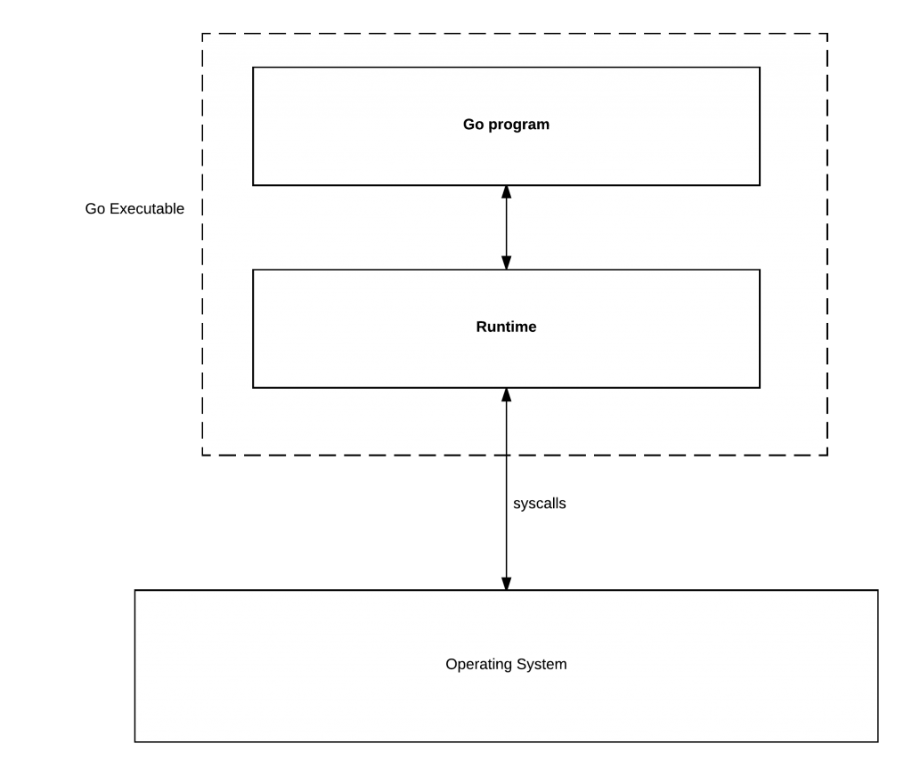
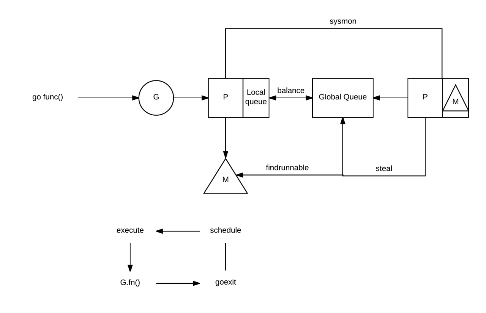

这是另一篇关于Go调度器(scheduler)的文章。 原文: GO SCHEDULER: MS, PS & GS by Uber工程师 Povilas。
网上已经有很多关于Go调度器的文章了， 比如Golang调度器源码分析,多看一些，可以加深记忆，也可以对比查看文章中是否有不准确的地方,更全面的了解Go的调度器。
我决定深入了解Go的内部机制， 因为很长时间没人写关于Go scheduler的文章了， 我觉得这是一个很有趣的知识点，所以让我们开始吧。
基础知识
Go的运行时管理着调度、垃圾回收以及goroutine的运行环境。本文只关注于调度器。
运行时负责运行goroutine并把它们影射到操作系统的线程上。goroutine比线程还轻量， 启动的时候花费很少。每个goroutine都是由一个G结构来表示，
这个结构体的字段用来跟踪此goroutine的栈(stack)和状态，所以你可以认为G = goroutine。
运行时管理着G并把它们映射到Logical Processor(称之为P). P可以看作是一个抽象的资源或者一个上下文，它需要获取以便操作系统线程(称之为M)可以运行G。
通过runtime.GOMAXPROCS (numLogicalProcessors)可以控制多少P可以获取。如果你需要调整这个参数(大部分情况下你无需调整)， 只设置一次， 因为它需要 STW gc pause。
本质上，操作系统运行线程，线程运行你的代码。Go的技巧是编译器会在Go运行时的一些地方插入系统调用， （比如通过channel发送值,调用runtime包等），所以Go可以通知调度器执行特定的操作。

上图的理解来自 Analysis of the Go runtime scheduler
M、P 和 G 之间的交互
M、P和G之间的交互有点复杂。看看下面这张来自 Gao Chao的go runtime scheduler 幻灯片中的一张图：

可以看到，Go运行时存在两种类型的queue： 一种是一个全局的queue(在schedt结构体中，很少用到)， 一种是每个P都维护自己的G的queue。
为了运行goroutine, M需要持有上下文P。M会从P的queue弹出一个goroutine并执行。
当你创建一个新的goroutine的时候(go func()方法)，它会被放入P的queue。当然还有一个 work-stealing调度算法，当M执行了一些G后,如果它的queue为空，它会随机的选择另外一个P,从它的queue中取走一半的G到自己的queue中执行。(偷!)
当你的goroutine执行阻塞的系统调用的时候(syscall)，阻塞的系统调用会中断(intercepted)，如果当前有一些G在执行，运行时会把这个线程从P中摘除(detach)，然后再创建一个新的操作系统的线程(如果没有空闲的线程可用的话)来服务于这个P。
当系统调用继续的时候，这个goroutine被放入到本地运行queue，线程会park它自己(休眠)， 加入到空闲线程中。
如果一个goroutine执行网络调用，运行时会做类似的动作。调用会被中断，但是由于Go使用集成的network poller,它有自己的线程，所以还给它。
Go运行时会在下面的goroutine被阻塞的情况下运行另外一个goroutine：
－ blocking syscall (for example opening a file),
－ network input,
－ channel operations,
－ primitives in the sync package.
调度器跟踪调试
Go可以跟踪运行时的调度器，这是通过 GODEBUG 环境变量实现的:
|
|
下面是输出的例子:
|
|
注意输出使用了 G、M和P的概念以及她们的状态， 比如P的queue的大小。 如果你不想关心这些细节，你可以使用：
|
|
William Kennedy写了一篇很好的文章, 解释了这些细节。
当然，还有一个go自己的工具 go tool trace, 它有一个UI, 允许你查看你的程序和运行时的状况。你可以阅读这篇文章: Pusher。
参考文档